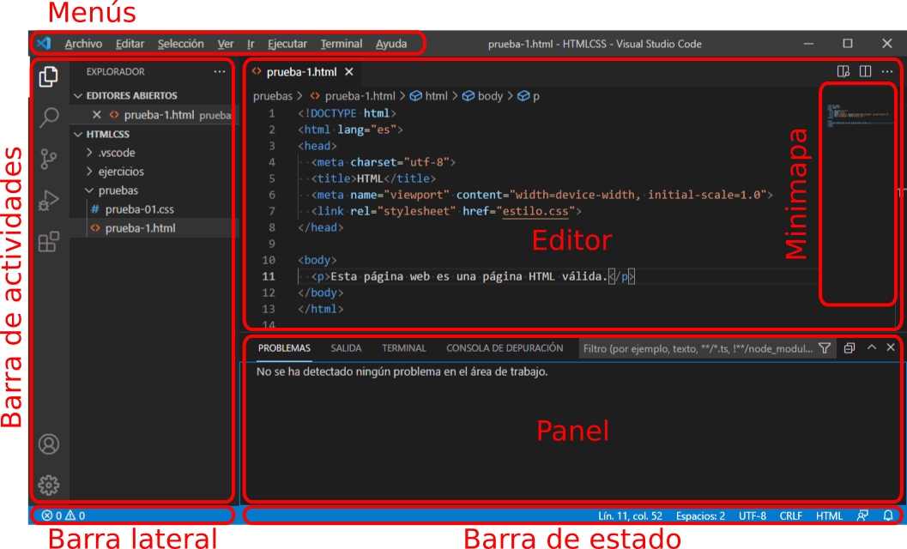

Estos son los elementos principales del interfaz de Visual Studio Code:

Abrir enlace
Para abrir un documento enlazado, haga Ctrl+clic en la URL. Si es un documento local, el documento se abrirá en Visual Studio Code en una nueva pestaña. Si es un documento externo, el documento se abrirá en el navegador predeterminado.
Formatear código
Para formatear código, pulse el atajo de teclado Alt+Shift+f.
Al pegar código, Visual Studio Code añade un sangrado que puede resultar molesto en caso de que un formateo automático posterior no lo corrija (por ejemplo, si el código pegado incluye un elemento <pre>.
La solución es pulsar Ctrl+z (deshacer) inmediatamente después de pegar el código. De esa manera se eliminará el sangrado añadido.
Al situar el cursor sobre la ruta de una imagen, se muestra un cuadro con una miniatura de la imagen y el tamaño de la imagen. Además, haciendo
Ctrl+clic izquierdo se abre la imagen en otra pestaña.
En este curso, utilizaremos esta extensión para ver el tamaño de las imágenes insertadas y poder rellenar los atributos width y height fácilmente.
Cree la etiqueta <img> con los atributos src y alt:
Sitúe el cursor sobre el atributo src y se mostrará un cuadro con una miniatura de la imagen y el tamaño de la imagen:
Añada los atributos width y height con los valores indicados en el cuadro:
Cuando se escribe una ruta relativa (en un enlace, en una imagen, etc), al escribir una barra (/), se muestra un selector con los archivos y directorios disponibles. Al seleccionar uno de ellos, el nombre se añade a la ruta. Si con la lista visible escribimos uno o más caracteres, la lista muestra únicamente los archivos y directorios que comienzan por esos caracteres.
Problemas detectados:
Como esta extensión sólo muestra la lista de archivos al escribir la barra (/), si el archivo al que queremos hacer referencia está en el mismo directorio del archivo que estamos editando, no podemos ver la lista de archivos. Una posible solución (que no termina de gustarme) es escribir ./ (punto barra). Como el punto hace referencia al directorio en el que estamos, al pulsar la barra después del punto sí que se muestra la barra de archivos.
Si las imágenes se encuentran en un subdirectorio del directorio actual:
Empiece a escribir el camino hasta las imágenes en el atributo src:
Al escribir el carácter / (barra) se mostrará un cuadro con el contenido del directorio:
Si sigue escribiendo, el cuadro mostrará únicamente los ficheros cuyo nombre coincida con lo escrito:
En vez de escribir el nombre completo, en cualquier momento puede desplazar con las teclas de flecha arria o abajo la franja azul hasta el nombre deseado:
y pulsar Intro para que se escriba en la página el nombre seleccionado en azul:
Si las imágenes se encuentran en un directorio que no es un subdirectorio del directorio actual:
Escriba ../ para indicar que el camino empieza subiendo al directorio superior y se mostrarán los directorios y ficheros contenidos en el directorio superior:
A partir de ahí elija o escriba el nombre del directorio (o ../ si fuera necesario subir otro directorio) y se mostrará su contenido como en el ejemplo anterior:
Si las imágenes se encuentran en el mismo directorio que la página web:
Escriba ./ para indicar que el camino empieza en el mismo directorio y se mostrarán los directorios y ficheros contenidos en el directorio actual:
Elija la imagen deseada, como en los ejemplos anteriores:
Por último, borre los caracteres ./ iniciales (no son incorrectos, pero sí innecesarios):